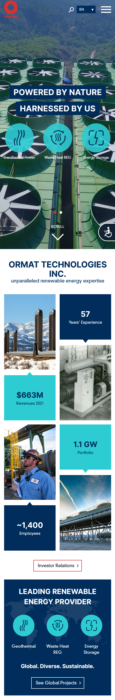
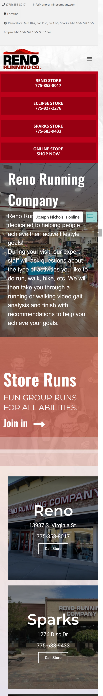

White Space
Renown Health
www.renown.orgRenown does an excellent job of using plenty of padding and white space. It feels as though it was designed with simplicity in mind. The amount of white space and padding makes for an easy ready and you are not distracted but flashy pictures and text. Renown Regional Medical Center is where I work.
Repetition
Ormat Technologies
www.ormat.com Ormat's website demonstrates the principle of repetition. This site follows both color patterns and text color patterns. They also use a similar shapes. These patterns are not directly in line but they do repeat over the course of the site. My husband works for Ormat as a Sr. Network Engineer.
Alignmnet
Reno Running Company
www.renorunningcompany.com Reno Running Company exhibits the design principle of alignmnent. The site is aligned verticaly and horizontaly all throughout. It is east to follow and read. Much of the text is aligned to the left with appropriate calls to action being centered. This is a great place to buy running shoes! I love to run.